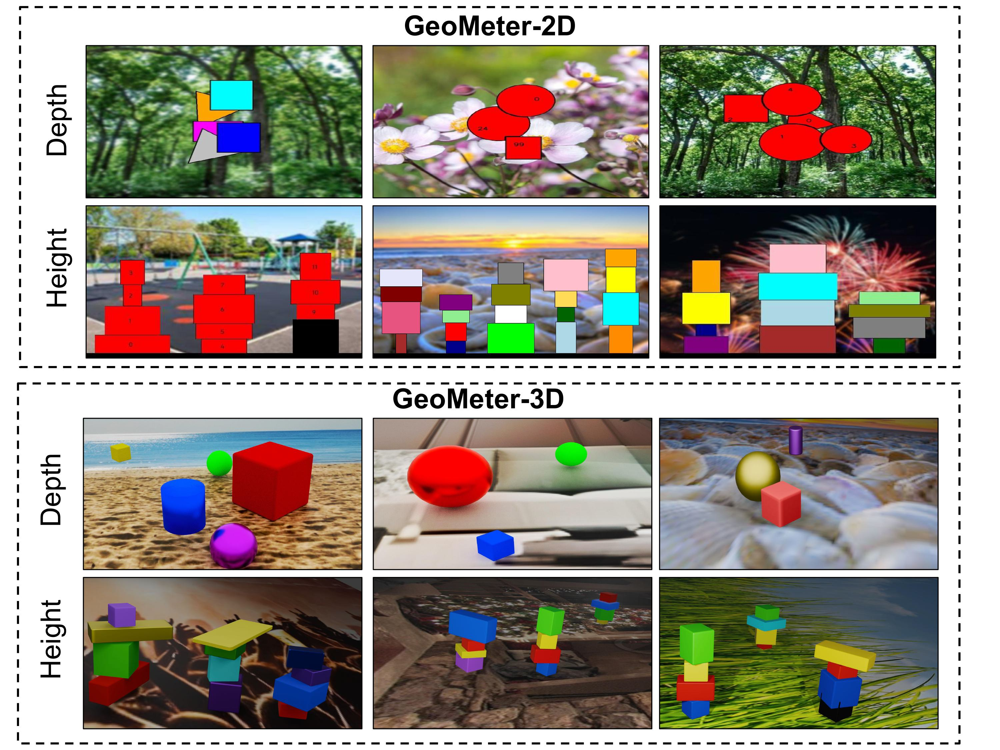
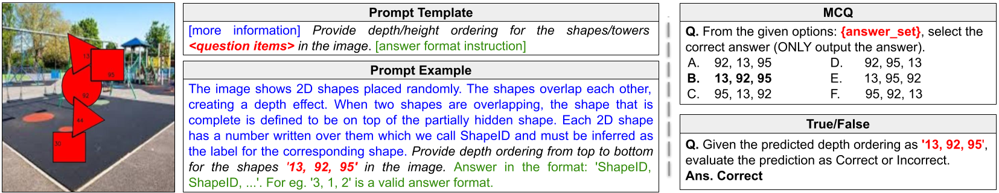
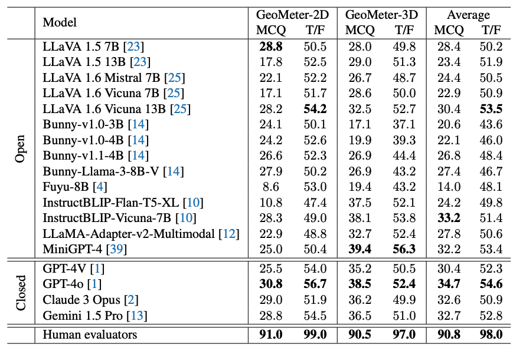
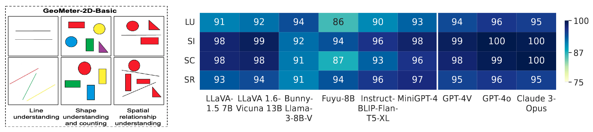
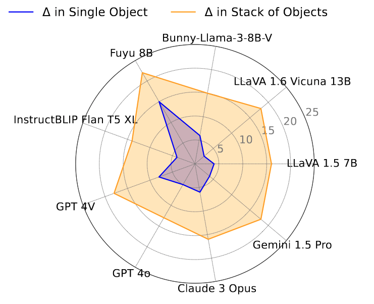
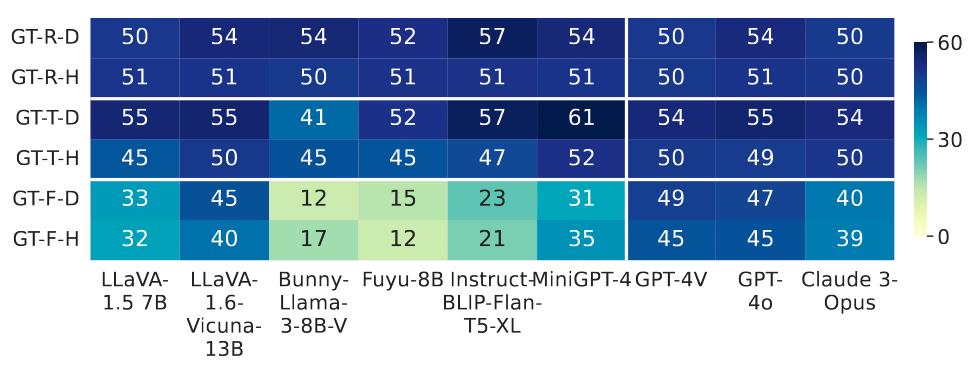

Benchmark Samples

Samples from the proposed suite of benchmark datasets. Here each samples are shown with random query attributes- color and numeric label for GeoMeter-2D; and color and material for GeoMeter-3D dataset.

Sample image-text pair from the datasets. Here, prompt template shows the basic template for each image-text pair in our datasets, where the prompt example is the actual prompt for the image. The prompt example is appended with either MCQ or True/False type question.
Quantitative Results

Performance comparison of the studied models on proposed datasets. The reported results are averaged across depth and
height category, query attributes and scene density with top scores in bold. Average denotes average performance of both datasets. Here, T/F denotes True/False type questions.
Analysis
1. Models show basic visual reasoning capability but struggles in advance perception tasks.
We developed a specialized dataset called GeoMeter-2D-Basic containing 30 image-text pairs to evaluate the fundamental visual reasoning capabilities of Vision Language Models (VLMs). This dataset focuses on basic geometric tasks like line understanding, shape recognition, shape counting, and assessing spatial relationships between shapes. The initial assessments using MCQs demonstrate high performance by models on these basic tasks. Despite this proficiency in simple visual properties, results highlight that these same models struggle significantly with depth and height perception tasks involving similar shapes. This discrepancy underscores the benchmark's value in identifying gaps in VLMs' capabilities to handle more complex spatial reasoning, beyond mere shape recognition.

Model behavior on basic understanding of shapes and size on our created GeoMeter-2D-Basic dataset (samples on the left).Performance of selected models on this dataset is shown in right. Here, LU, SI, SC and SR respectively denote line understanding, shape identification, shape counting and spatial reasoning.
2. Height perception poses greater challenges than depth
perception, especially in stacked object arrangements.
The superior performance of models in depth perception tasks, as compared to height perception is likely due to the availability of simpler depth cues—such as occlusion and perspective—in training datasets, which are relatively easy for VLMs to interpret. In contrast, we hypothesize height perception is more complex, requiring analysis of vertical object placement and relationships between object sizes in stacked arrangements. To further support our hypothesis, our analysis of single and stacked objects from the GeoMeter-3D dataset reveals that while the performance gap between depth and height tasks is minor for single objects, there is a substantial decline in performance for height tasks with stacked objects. This pattern suggests that height perception, especially with multiple objects stacked vertically, poses a greater challenge for VLMs than depth perception.

Here, ∆ denotes performance gap between depth and height perception, which grows even larger with stacked arrangement of objects, as opposed to single objects. This suggests that while models struggle with height perception in general, stacked objects further degrade their performance.
3. Models' limitation is due to inherent reasoning capability and not insufficient prompt detail.
To provide models with additional contextual information regarding visual cues with the help of intermediate reasoning, we implemented chain-of-thought prompting. To evaluate its effectiveness, we selected a subset (100 image-text pairs) from the GeoMeter-3D dataset's depth category and created chain-of-thought prompts with intermediate reasoning steps. Testing top-performing models with these prompts showed only slight performance improvements, despite the highly detailed nature of these prompts. This marginal improvement suggesting that the models may already perform some internal reasoning with standard prompts. The findings indicate that limited depth and height perception performance is due to inherent model limitations in spatial understanding, underscoring the need for architectural advancements rather than solely relying on prompt engineering.

Example of prompt engineering using chain of thought prompting.

Performance gain with chain of thought prompting over standard prompting.
4. Some open-source models are more biased towards picking True over False than others.
The performance of some open-source models on True/False questions tends to hover around 50% , suggesting they might not be effectively distinguishing between true and false statements, potentially defaulting to random guesses. This is highlighted by experiments showing similar outcomes when ground truth is random versus always set to "True," and a significant performance decline when it is always "False," indicating a bias towards predicting "True." This bias toward "True" may arise from imbalances in training data, where models are overexposed to affirmative statements or lack sufficient counterexamples of false statements. As a result, rather than demonstrating genuine understanding, these models often rely on heuristic patterns or shortcuts. Furthermore, this behavior highlights a deeper issue: the models' inability to engage in more nuanced decision-making or reasoning under uncertainty. True/False questions, though simple in format, test models' grasp of logical consistency and factual correctness - an area where many open-source models falter. By exposing such tendencies, this evaluation method provides valuable insight into where these models need refinement, particularly in developing the capacity for more context-driven predictions.

Effect of ground truth value in True/False questions. GT-R denotes randomly set ground truth between true and false; whereas GT-T/F denotes ground truth always true or always false.
5. Some open source models are more biased towards picking the first choice in case of MCQ.
Experiments reveal that while closed-source models show consistent performance across various MCQ ground truth placements, open-source models exhibit a significant bias toward selecting the first option, particularly when the ground truth is positioned as the first choice. This bias could stem from the way training data is structured, where the first choice is frequently correct or if the models encounter more examples with answers listed early in the sequence, leading models to develop a preference for selecting it. Their performance drops notably when the correct answer is absent, suggesting these models struggle with identifying ``None of the above" options and may rely on heuristics rather than actual reasoning, leading to random selections. This reflects a limitation in their reasoning abilities, as they likely rely on pattern recognition rather than genuine understanding of the question and its context, which suggests that open-source models may lack sophisticated decision-making processes, opting for shortcuts when faced with challenging questions.

Effect of ground truth ordering in choices of MCQs. GT-C1 and GT-Ab denotes ground truth being choice 1 and not present respectively.
BibTeX
@misc{azad2025understandingdepthheightperception,
title={Understanding Depth and Height Perception in Large Visual-Language Models},
author={Shehreen Azad and Yash Jain and Rishit Garg and Yogesh S Rawat and Vibhav Vineet},
year={2025},
eprint={2408.11748},
archivePrefix={arXiv},
primaryClass={cs.CV},
url={https://arxiv.org/abs/2408.11748},
}